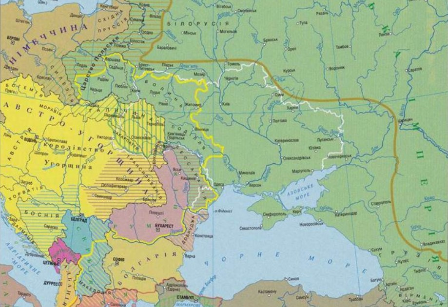
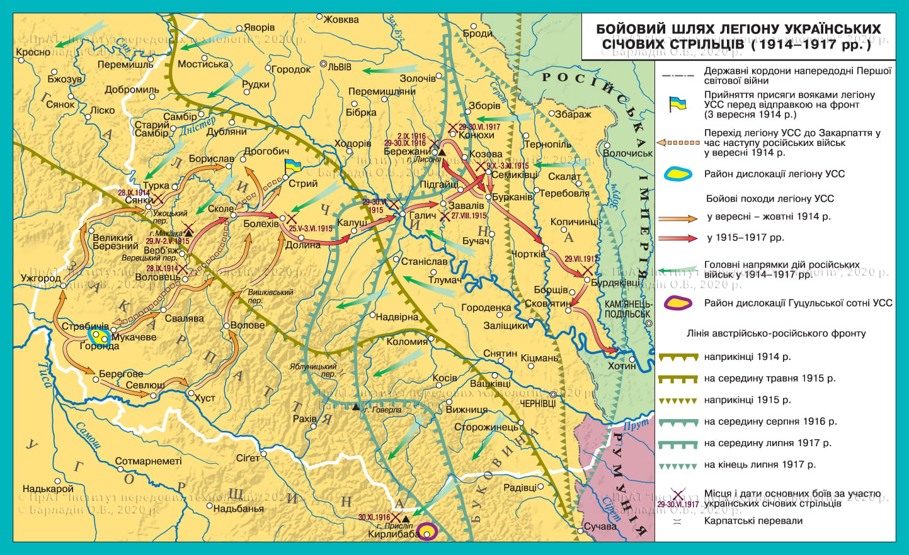
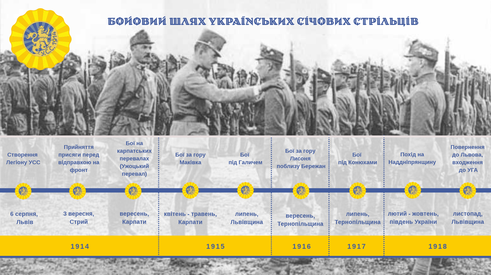

Україна в роки Першої світової війни
⛶
На весь екран
🗑️️
Очистити відповіді
Території
Битви
Фронт
Організації
Постаті
УСС
Тести
Блок 1. «Територіальні претензії воюючих країн»

⚡ Країни (Підказки)
🟡 Регіони (Підказки)
Блок 2. «Військові битви»
💡
Підказка
Перевірити
Блок 3. «Зміни лінії фронту»
💡 Підказка
Перевірити
🖼 Галерея
Підказки (перетягніть):
Блок 4. Організації
Перевірити 4.1
Блок 5. Постаті
Перевірити 4.2
Підказки (перетягніть):
Блок 6. «Бойовий шлях УСС»
Завдання 6.1. Карта бойового шляху
Перевірити 5.1


Завдання 6.2. Пісні УСС
Перевірити 5.2
Блок 7. Завдання для самоперевірки
12. Увідповідніть уривок історичного джерела (1-4), у якому відображено позицію щодо Першої світової війни, з назвою політичної сили (А-Д).
Перевірити 12 завдання
Завершити та показати результат
Перегляд
100%
✕ Закрити